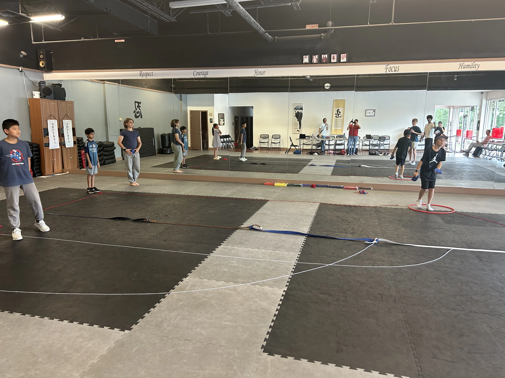
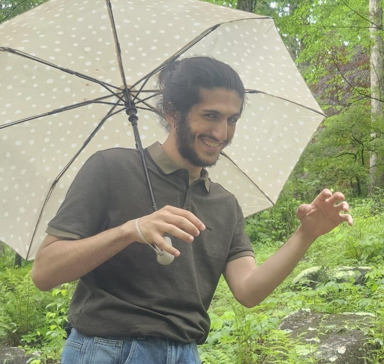
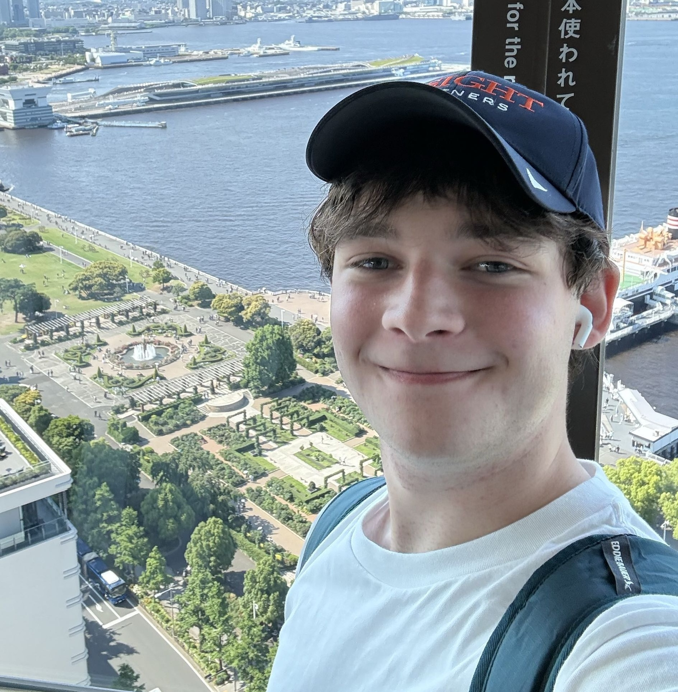
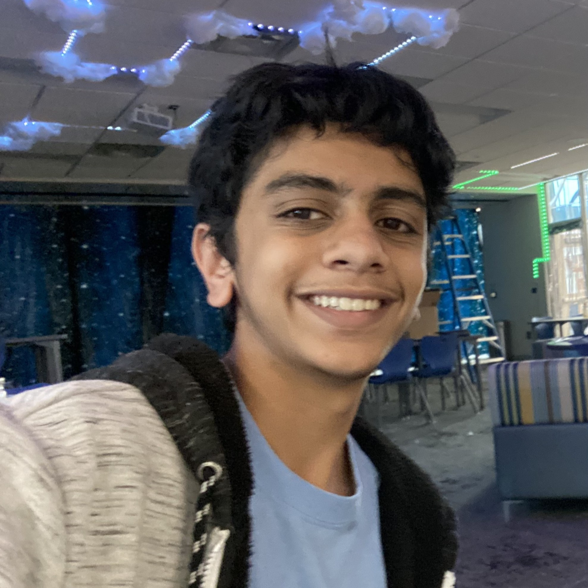

Simulating the design of internet infrastructure
Fun, hands-on coding and digital creation workshops led by local high schoolers. No
experience required. Build games, create websites, and learn how computers work through engaging
projects and activities.
Drop in any Sunday. No homework, no grades, just pure exploration.
When: Sundays — drop-off friendly, 2 focused hours
Time: 10:00 AM – 12:00 PM
Where: 5075 Abbotts Bridge Rd, Johns Creek, GA 30005
Ages: 12–15, all skill levels welcome
Bring: Your own charged laptop
Cost: Free
👉 Ready to join? Sign up now!
After signing up, our team will send you a confirmation email from thecstutors039@gmail.com
We designed this environment to be an alternative to the traditional classroom. There are no lectures, no textbooks, and no compounding stress.
Build real, styled, interactive pages with HTML, CSS & JS
Learn to use AI tools to brainstorm and build projects
From loops to logic, the core skills for every level
Problem-solving strategies used in real-world software and systems
Code mechanics, manipulate sprites, and build your own custom games
Discover how information travels across the world
As local high school students, we wanted to create the kind of program we would have enjoyed when we were younger: fun, hands-on, beginner-friendly, and completely free.
Our goal is not to turn every student into a programmer. Instead, we hope to help students discover new interests, build confidence, develop problem-solving skills, and have fun creating things.
“Computer science is so much bigger, deeper, and more exciting than the surface-level coding we are usually taught in school.”
Brian
I’m an Innovation Academy senior into everything from software development to quantum computing, here to help you find your favorite part of the tech world!
David
Hello! My name is David Nahra, I am a rising senior in Chattahoochee High School and I love helping to teach the next generation of computer scientists!
Connor
Hello! My name is Connor, I am a rising senior at Innovation Academy High School looking forward to helping a younger generation find their start in computer science!
Vihaan
I’m an Innovation Academy junior into physics and engineering, here to show anyone who's intimidated by digital tech that you can absolutely learn to love it!A big thank you to our supporters making free classes possible!
Please consider visiting and supporting them!